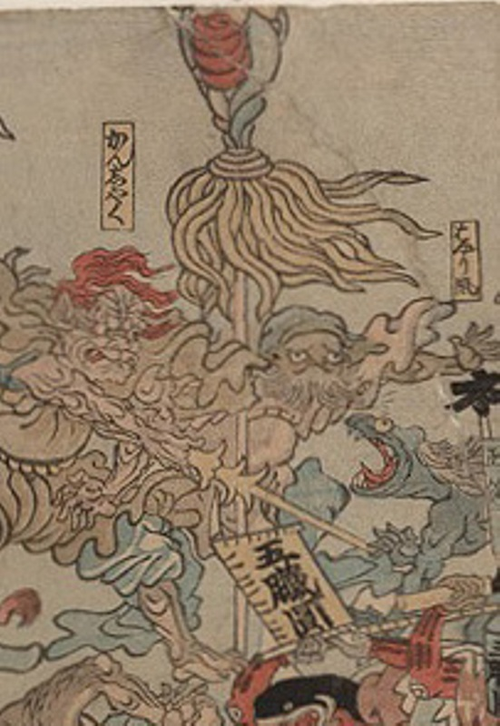

病気；ビョウキ，疫神；エキシン，流行風邪；ハヤリカゼ

流行風邪が擬人化した化物。白ひげを生やし、頭巾、衣、袴を着けている。右手には纏のようなものを持っている。
著作者：歌川芳虎／出典：親書誌：U426_nichibunken_0012：諸病諸薬の戦い；ショビョウショヤクノタタカイ／日付：2006／資源識別子：U426_nichibunken_0012_0012_0000
Copyright (c)2010- International Research Center for Japanese Studies, Kyoto, Japan. All rights reserved.